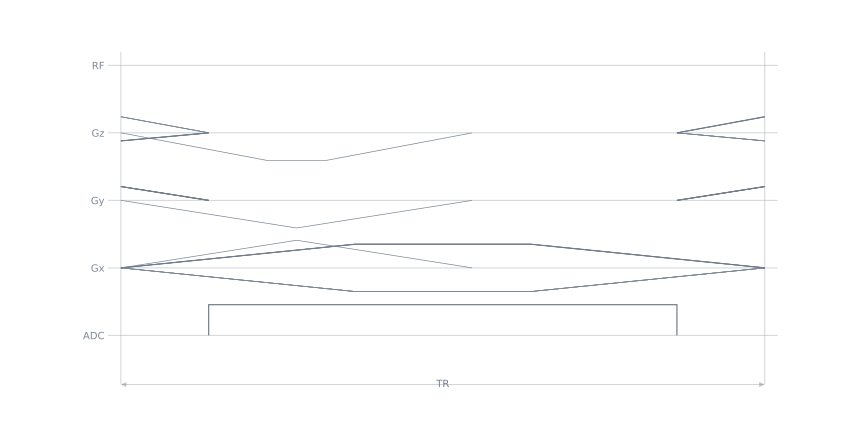
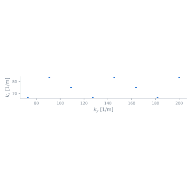

EpiReadout3D#
- class pypulseqpp.sequences.EpiReadout3D[source]#
Bases:
SequenceModuleA slab-selective EPI train, phase-encoded along y and partition-encoded along z.
fovandmatrixtake three values, readout first. The partition axis is blipped line by line, so a whole CAIPI pattern is played inside one train.The scan loop sets the shot origin by scaling prewinders. Blips implement the relative offsets and share the readout ramps; flyback blips instead play in the rewind gaps. TE is measured to the train line
te_line, the first by default: the loop knows which line samples the centre of k-space, the module does not.Navigator lines, when asked for, are read after the read prewinder and before the phase-encode prewinder, without blips, so they sample the centre line at alternating polarities. The train then continues the alternation.
- Parameters:
system (Opts) – System limits.
rf (RfEvent) – The pulse that opens the repetition. A refocusing pulse builds the readout half of a spin-echo EPI.
gz (GradEvent, default=None) – A selection gradient played in the same block as
rf.gz_reph (GradEvent, default=None) – The rephaser that unwinds
gz.fov (float | Sequence[float]) – Field of view (m), per encoded axis, readout first.
matrix (int | Sequence[int]) – Matrix size, per encoded axis.
order (ArrayLike, default=None) –
(etl,)or(etl, 2)integer offsets from the shot’s origin, one row per line. Supplying one silences the generator arguments below; the default takes a train fromcalc_epi_order.etl (int, default=None) – Lines per repetition. Defaults to what one shot of the requested scheme needs to cross the phase-encode matrix.
scheme ({'linear', 'caipi', 'zigzag'}, default='linear') – Which built-in ordering to generate.
'linear'steps bysegments * accelerationevery line and never leaves its partition;'caipi'adds the partition sawtooth of blipped-CAIPI;'zigzag'traverses up and down a phase-encode segment instead of across the whole matrix.acceleration (int, default=1) – Phase-encode undersampling,
Ry: lines the blip skips.segments (int, default=1) – Shots the train is interleaved across,
S. The blip becomesS * Ry, which shortens the train without changing the lattice sampled.partition_acceleration (int, default=1) – Partition undersampling
Rz, the height of the CAIPI cycle.'caipi'only.caipi_shift (int, default=1) – Partitions the pattern climbs per acquired line.
'caipi'only.extent (int, default=None) – Phase-encode lines one pass spans. Required by
'zigzag', refused by the others.te (float, default=None) – Excitation isodelay to the echo of train line
te_line(s).Noneis as short as possible; every echo isespfrom the next, andecho_timeslists them.te_line (float, default=0.0) – Train line, counted from zero and possibly fractional, that
teis timed to.tr (float, default=None) – Repetition time (s), over the whole module. It includes the longest echo shift.
navigator_lines (int, default=0) – Lines read without blips between the read and the phase-encode prewinders, for odd-even phase correction. Refused with
flyback.echo_shifts (int, default=1) – Shots whose trains are delayed by successive multiples of
esp / echo_shifts, so the echo time grows smoothly across the interleaved lines. The module plays no shift; the loop lengthenswait_shift.oversampling (float, default=1.0) – Read oversampling:
delta_kxshrinks and the sampled read field of view grows, while resolution is fixed byfovandmatrix.readout_bandwidth_hz (float, default=500000.0) – Requested ADC sampling rate (Hz).
bandwidth_hzreports the achieved raster-compatible rate.ramp_sampling (bool, default=True) – Sample across the read ramps as well as the plateau, which is what makes the echo spacing short. Turn it off for a rectangular window at the cost of a longer train.
flyback (bool, default=False) – Read every line in the same direction, rewinding between them, instead of alternating polarity. It costs a rewind per line and buys away the odd-even inconsistency that a bipolar train leaves behind.
spoiling_cycles (float, default=0.0) – Read-axis spoiling at the end of the repetition, in cycles across
voxel_size_m.voxel_size_m (float, default=None) – Length the spoiling is counted over (m). The read resolution by default.
labels (Sequence[str], default=None) – Counters for the encoded axes, phase encode first. Two names for a 3D train, one for 2D.
trigger (TriggerEvent, default=None) – A trigger or digital output armed on the prewinder block.
- Attributes:
rf (RfEvent) – The excitation.
gz (GradEvent) – Its selection gradient, if one was given.
gz_reph (GradEvent) – Its rephaser, if one was given.
gx_pre (TrapEvent) – Read prewinder, half a line lobe against the first line’s polarity.
gx (list[GradEvent]) – One read lobe per line: alternating polarity for a blipped train, the same lobe every time for a flyback one.
gx_navigator (list[GradEvent]) – One read lobe per navigator line, the first positive. Present only with
navigator_lines.gx_flyback (TrapEvent) – The rewind between two lines.
flybackonly.gy_blips, gz_blips (list) – One phase-encode event per line, or
Nonewhere no step is asked for, alwaysetllong. A blipped train’s entry carries the second half of the step into the line and the first half of the next out of it; a flyback train’s is the whole step, played in the rewind block after that line, so its last entry is alwaysNone.gz_blipsis 3D only.gy_pre, gz_pre (TrapEvent) – Phase encodes at their largest step, to be scaled per shot.
gz_preis 3D only.gy_rew, gz_rew (TrapEvent) – The encodes negated, in the block that closes the repetition.
gx_spoil (GradEvent) – The lobe that closes the read axis, bridged off the last line.
adc (AdcEvent) – The acquisition window, shared by every line.
shot_labels (tuple[LabelEvent, …]) –
SETcounters on the prewinder block, one per name inlabels. The loop writes the shot’s origin into them. Always a tuple, however many names there are, because the loop splats it.line_labels (tuple[tuple[LabelEvent, …], …]) – Per line, the
INCcounters that step from the previous line to this one – the ordering, expressed as labels. Empty for the first line, which theSETalready placed.order (NDArray[np.int64]) –
(etl, 2)integer(ky, kz)offsets from the shot’s origin.wait_te (DelayEvent) – Present only when a TE longer than the minimum was asked for.
wait_shift (DelayEvent) – The echo-shift delay right before the first train line, one block raster long. Present only with
echo_shiftsabove one; the loop lengthens it bys * echo_shift_stepon shotsand shortenswait_trby as much.wait_tr (DelayEvent) – Present when a TR longer than the minimum was asked for, or when
echo_shiftsis above one: it then holds the longest shift.etl (int) – Lines per repetition.
esp (float) – Echo spacing (s).
echo_times (NDArray[np.float64]) – Each line’s echo time (s) from the excitation isodelay, with no echo shift.
echo_time (float) – Echo time (s) of train line
te_line, which is whattesets.echo_shift_step (float) – Echo shift between successive shots (s),
esp / echo_shiftson the block raster; zero with one shift.bandwidth_hz (float) – Achieved ADC sampling rate (Hz).
n_samples (int) – Samples per line.
delta_kx (float) – Read-axis k-space step (1/m).
blip_span (float) – Time one phase-encode step takes (s). It is paid out of the read ramps.
- Raises:
ValueError – If a count is out of range,
orderis the wrong shape or steps outside the matrix,labelsdoes not name one counter per encoded axis,te_linelies outside the train, a navigator is asked of a flyback train, or the requested TE or TR is shorter than the train can achieve.
Examples
>>> import pypulseqpp.sequences as design >>> import pypulseqpp as pp >>> system = pp.Opts(max_grad=50, grad_unit="mT/m", max_slew=180, slew_unit="T/m/s") >>> slab = design.SpatialSelectiveExcitation(system, 15.0, 0.12, is_slab=True) >>> epi = design.EpiReadout3D( ... system, slab.rf, slab.gz, fov=(0.22, 0.22, 0.12), matrix=(64, 64, 32), ... scheme="caipi", acceleration=2, segments=2, partition_acceleration=3, ... labels=("LIN", "PAR"), ... ) >>> epi.etl 16
>>> sorted(set(int(step) for step in epi.order[1:, 1] - epi.order[:-1, 1])) [-1, 2]
One segment of a skipped-CAIPI train, and the lattice of
(line, partition)views it reads:

{kind=link}
{kind=link}
Methods
Build the module's block layout; implemented by the subclass. |
|
Publish events from the caller's locals and register keyword aliases. |
|
Publish named events without requiring prior block registration. |
Attributes